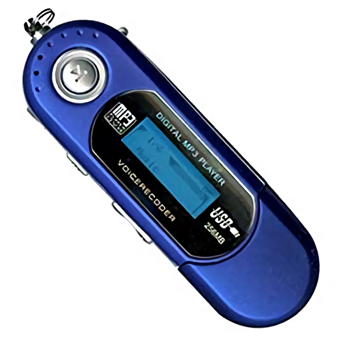

Before I got an iPod I had something like this, not sure of the exact brand/type but it was that shape. I do remember it had an issue with retaining memory, so every time the battery died it’d delete all my songs. Before that I borrowed my dad’s Sony Walkman, which was the early 2000s design.